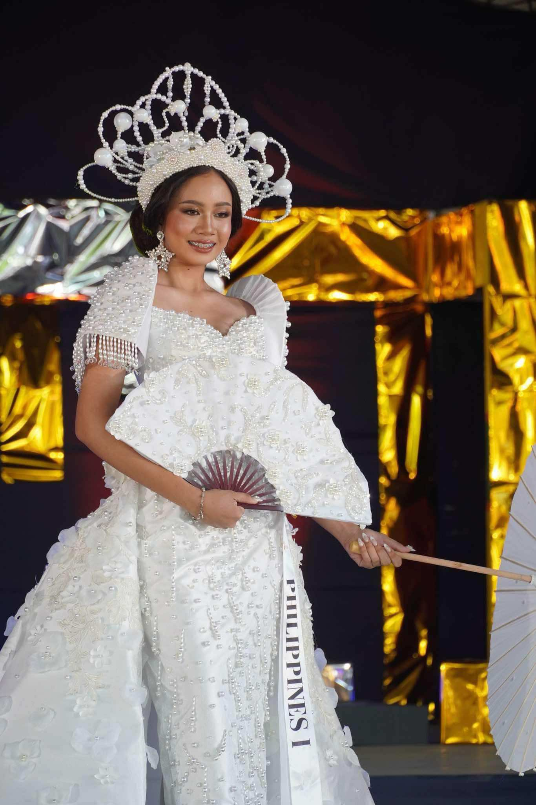
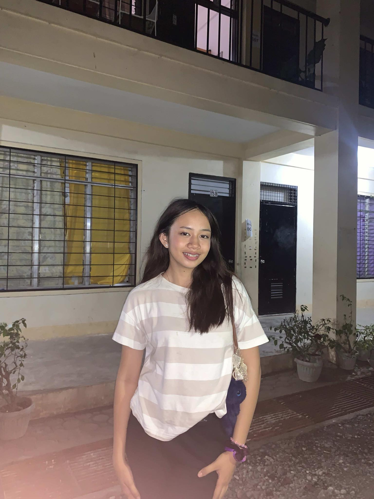
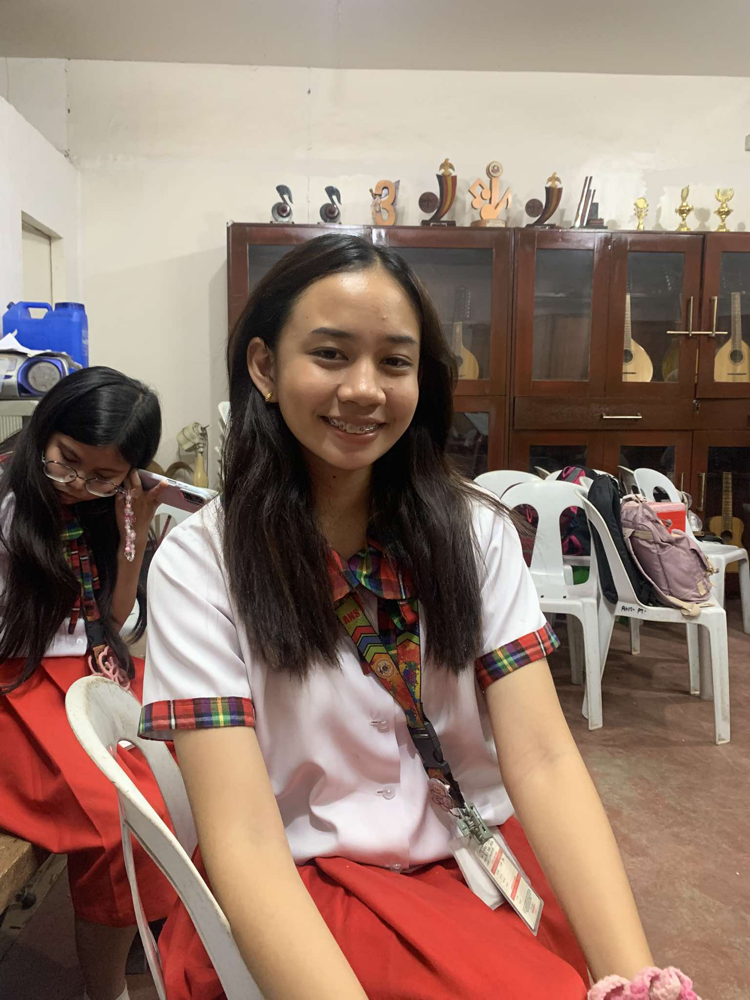

Welcome to My Website
I am Pauline Miche P. Ortiaga, Pau for short. I am 16 and was born on September 30, 2008. My favorites are singing, playing my guitar, eating, biking, watching movies, and my favorite foods are palabok, chicharon, takoyaki, and milk tea. My favorite color is purple. I also love going to church every Sunday and worshipping our Lord.

Miss United Nations 3rd Runner Up

I love posing for photos and taking pictures.

I love dogs.

I am an SPA Music Major.